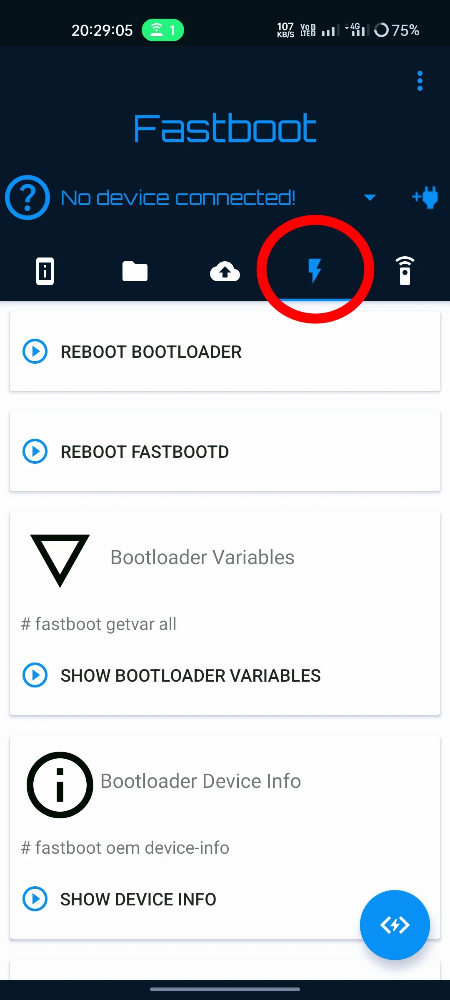
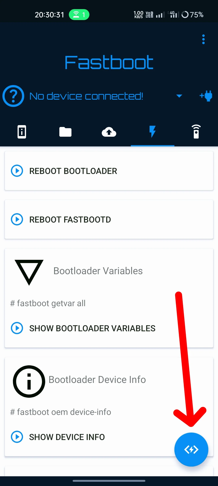

Instructions
Points to Remember
You can use any rom recovery to flash any rom.
Formatting data means it's a clean flash.
You don't need to flash boot, dtbo, vendor_boot again to update rom.
If super_empty fails to flash then leave it.
Sideloading may stuck at 47% and it may go above 100% too.
If the recovery screen says done/successful after sideloading any file then it means the file has been installed successfully (Don't mind what the other device/pc screen says).
To install a custom kernel, sideload the kernel zip the same way as you sideload rom (format data not needed).
Flashing via OTG Bugjaeger
Install and open Bugjaeger
Toggle OTG setting if present in your device
Connect tab in fastboot mode (Hold power and volume down button when tab is switched off to go in fastboot mode)
Click ok on the device when prompted for permission to bugjaeger every time it asks
Slide the horizontal tab present in the upper section of app, click on the icon which indicates lightning
Click on the blue floating thing present at right corner
Flash some necessary files
fastboot flash boot {attach boot.img}
fastboot flash dtbo {attach dtbo.img}
fastboot flash vendor_boot {attach vendor_boot.img}
fastboot wipe-super {attach super_empty.img}
Reboot to recovery by fastboot reboot recovery or hold power and volume up button
On tab click Install Update > Adb Sideload
Connect tab to otg again, click ok to every prompt, go to the same lightning symbol tab
Scroll down and choose last option (Pick file and perform sideload)
Select the appropriate firmware (the 150 MB thing) if not present in rom
Click yes if anything asked on tab screen
Sideload the rom same way and then gapps if you want and rom is vanilla
Now format data in recovery if switching roms and then reboot
Flashing via Termux
Install termux and termux-api
Open termux-api and allow necessary things
Open termux and type
termux-setup-storage
Hit enter and allow storage permission
pkg update && pkg upgrade
curl -sS https://raw.githubusercontent.com/offici5l/MiTool/67577f94e67a352b805cdc0047f25ab05573d987/install.sh | bash
Thanks offici5l for script
Move downloaded files to a folder let's say pipa in Downloads folder
In termux type
cp -r storage/downloads/pipa ~/ && cd pipa && adb start-server
Toggle OTG setting if present on your other device
Connect tab in fastboot mode (Hold power and volume down button when tab is switched off to go in fastboot mode)
Click ok when prompted for permission. If no pop up appears do adb kill-server && adb start-server then connect tab again
Flash files
fastboot flash boot boot.img
fastboot flash dtbo dtbo.img
fastboot flash vendor_boot vendor_boot.img
fastboot wipe-super super_empty.img
Reboot to recovery by fastboot reboot recovery or hold power and volume up button
On tab click Install Update > Adb Sideload
Connect tab to otg again, click ok on the prompt
Sideload firmware if not available in rom via
adb sideload {firmware file name}
Click yes if anything asked on tab screen
Sideload the rom same way and then gapps if you want and rom is vanilla
Now format data in recovery if switching roms and then reboot
Flashing via PC (Windows)
Install ADB & Fastboot globally
Download the .msi installer and install it (Next → Next → Finish)
Reboot tab to bootloader (Hold power + volume down)
In your PC, open the folder where ROM files are stored → right-click in empty space → Open in Terminal
Run commands:
fastboot flash boot boot.img
fastboot flash dtbo dtbo.img
fastboot flash vendor_boot vendor_boot.img
fastboot wipe-super super_empty.img
Reboot to recovery using
fastboot reboot recovery
or hold power + volume up
On tab click Install Update → ADB Sideload
Sideload firmware (if not available in ROM) using:
adb sideload {firmware file name}
You may drag-and-drop firmware in Windows Terminal
Press Yes if the tab asks for confirmation
(Optional) Reboot recovery again
Install Update → ADB sideload again
Sideload the ROM the same way, then gapps if needed
Format data from recovery if switching ROMs → reboot system
Common Errors
SPL downgrade, Flash aborted
Solution: Use recovery from an older ROM build, then flash your desired ROM.
ROM package has .bin extension
Solution: Simply rename the file from .bin to .zip.
Device rebooted to classic bootloader
Solution: Choose "reboot bootloader" and flash the stock fastboot ROM.
Status 3 error during sideloading
Solution: Update your ADB platform tools to the latest version.
Device not showing in fastboot or ADB
Solution: Install the proper USB drivers for your device on your computer.